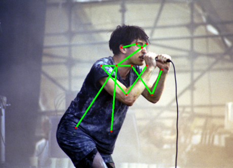
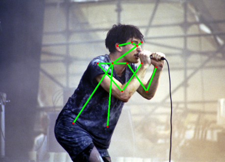
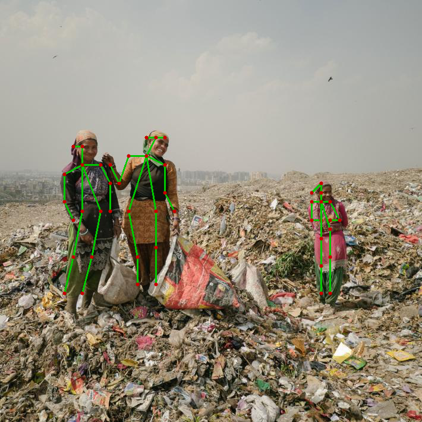
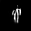

openpose networks
opencv can now import those, they are so cool
 

it even knows, where the fingertips are, though it cannot see those !

with a bit of hacking, it's also possible with multiple persons. (not perfect yet, WIP !)

if we sum up all the PAF maps, it forms little men ;)

UPDATE: there's a new tf trained body model here:
https://github.com/ildoonet/tf-pose-estimation/blob/master/models/graph/mobilenet_thin/graph_freeze.pb
it's only 7.6mb, and runs 10x faster than the original caffemodels !